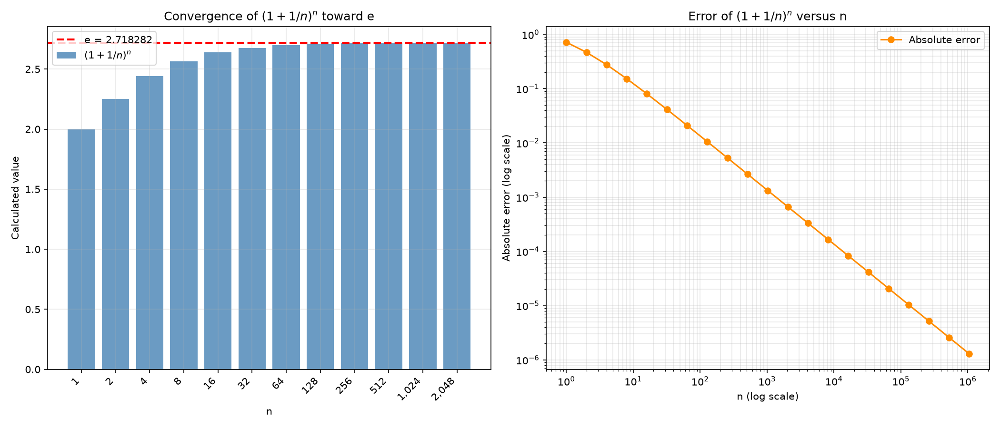
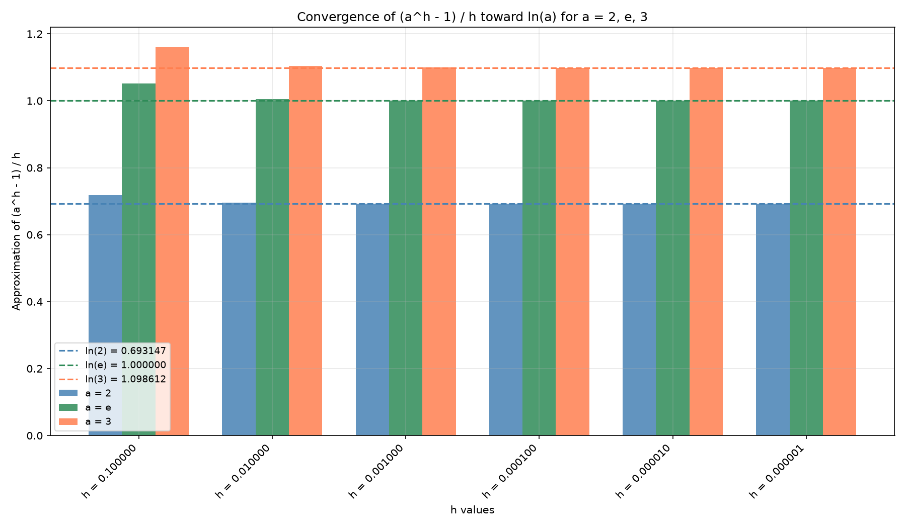
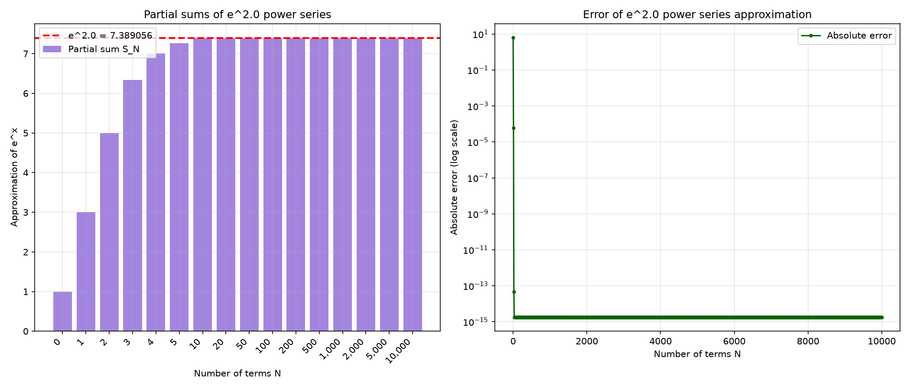

An investigation of numerical convergence toward mathematical constants and functions using series approximations.
This laboratory exercise investigates three fundamental numerical methods:
The sequence (1 + 1/n)n converges to the mathematical constant e as n increases. Starting from n = 1 (value = 2.0), the sequence approaches e as n is doubled repeatedly. At n = 1,048,576, the value is 2.718280532282396 with an absolute error of approximately 1.30 × 10−6.

The difference quotient (ah − 1)/h converges to the natural logarithm ln(a) as h approaches zero. This was verified for a = 2, a = e, and a = 3. With a convergence tolerance of 1 × 10−6, all three values of a reached the required accuracy at h = 1 × 10−6.

The power series ex = Σ(xn/n!) converges rapidly to the true value of ex. Using x = 2.0, the partial sum SN approaches e2 = 7.389056098930650. An error below 1 × 10−6 is achieved with just N = 13 terms, and machine precision (~10−15) is reached by N = 20.
